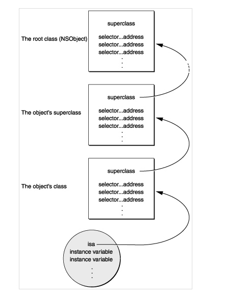

运行时中的消息处理机制消息的发送及消息的转发
补充:类的方法链表中存储的是Method链表 而一个Method也是一个结构体指针,这个指针包含
一个方法 Method，其包含一个方法选标 SEL – 表示该方法的名称，一个types – 表示该方法参数的类型，一个 IMP - 指向该方法的具体实现的函数指针。
基础数据类型
SEL
SEL又叫选择器，是表示一个方法的selector的指针,为一个指针
typedef struct objc_selector *SEL;
objc_selector结构体的详细定义没有在头文件中找到。方法的selector用于表示运行时方法的名字。Objective-C在编译时，会依据每一个方法的名字、参数序列，生成一个唯一的整型标识(Int类型的地址)，这个标识就是SEL。如下代码所示：
SEL sel1 = @selector(method1);
NSLog(@"sel : %p", sel1);
//输出
2014-10-30 18:40:07.518 RuntimeTest[52734:466626] sel : 0x100002d72
两个类之间不管有没有关系,只要方法名相同，那么方法的SEL就是一样的.每一个方法都对应着一个SEL。
所以在Objective-C同一个类(及类的继承体系)中，不能存在2个同名的方法，即使参数类型不同也不行。相同的方法只能对应一个SEL。这也就导致Objective-C在处理相同方法名且参数个数相同但类型不同的方法方面的能力很差。
例如:
- (void)setWidth:(int)width;
- (void)setWidth:(double)width;
//上面的写法 这样的定义被认为是一种编译错误 饿哦们需要这样申明
-(void)setWidthIntValue:(int)width;
-(void)setWidthDoubleValue:(double)width;
当然不同的类就算是select相同也没关系 .不同类的实例对象执行相同的selector时，会在各自的方法列表中去根据selector去寻找自己对应的IMP。
工程中的所有的SEL组成一个Set集合，Set的特点就是唯一，因此SEL是唯一的。因此，如果我们想到这个方法集合中查找某个方法时，只需要去找到这个方法对应的SEL就行了，SEL实际上就是根据方法名hash化了的一个字符串，而对于字符串的比较仅仅需要比较他们的地址就可以了，可以说速度上无语伦比！
但是，有一个问题，就是数量增多会增大hash冲突而导致的性能下降（或是没有冲突，因为也可能用的是perfect hash）。但是不管使用什么样的方法加速，如果能够将总量减少（多个方法可能对应同一个SEL），那将是最犀利的方法。那么，我们就不难理解，为什么SEL仅仅是函数名了。
本质上，SEL只是一个指向方法的指针（准确的说，只是一个根据方法名hash化了的KEY值，能唯一代表一个方法），它的存在只是为了加快方法的查询速度。
/**
我们可以在运行时添加新的selector，也可以在运行时获取已存在的selector，我们可以通过下面三种方法来获取SEL:
*/
sel_registerName函数
Objective-C编译器提供的@selector()
NSSelectorFromString()方法
IMP
IMP实际上是一个函数指针，指向方法实现的首地址。是函数指针而不是指针函数
IMP 是消息最终调用的执行代码，是方法真正的实现代码
id (*IMP)(id, SEL, ...)
第一个参数是指向self的指针(如果是实例方法，则是类实例的内存地址；如果是类方法，则是指向元类的指针)，第二个参数是方法选择器(selector)，接下来是方法的实际参数列表。
前面介绍过的SEL就是为了查找方法的最终实现IMP的。由于每个方法对应唯一的SEL，因此我们可以通过SEL方便快速准确地获得它所对应的IMP.取得IMP后，我们就获得了执行这个方法代码的入口点，此时，我们就可以像调用普通的C语言函数一样来使用这个函数指针了。
通过取得IMP，我们可以跳过Runtime的消息传递机制，直接执行IMP指向的函数实现，这样省去了Runtime消息传递过程中所做的一系列查找操作，会比直接向对象发送消息高效一些。
Method
介绍完SEL和IMP，我们就可以来讲讲Method了。Method用于表示类定义中的方法，则定义如下：
typedef struct objc_method *Method;
struct objc_method {
SEL method_name OBJC2_UNAVAILABLE; // 方法名
char *method_types OBJC2_UNAVAILABLE;
IMP method_imp OBJC2_UNAVAILABLE; // 方法实现
}
/**
一个方法 Method，其包含一个方法选标 SEL – 表示该方法的名称，一个types – 表示该方法参数的类
型，一个 IMP - 指向该方法的具体实现的函数指针。
*/
我们可以看到该结构体中包含一个SEL和IMP，实际上相当于在SEL和IMP之间作了一个映射。有了SEL，我们便可以找到对应的IMP，从而调用方法的实现代码。
查找IMP 时
1，首先去该类的方法 cache 中查找，如果找到了就返回它；
2，如果没有找到，就去该类的方法列表中查找。如果在该类的方法列表中找到了，则将 IMP 返回，并将它加入cache中缓存起来。根据最近使用原则，这个方法再次调用的可能性很大，缓存起来可以节省下次调用再次查找的开销。
3，如果在该类的方法列表中没找到对应的 IMP，在通过该类结构中的 super_class指针在其父类结构的方法列表中去查找，直到在某个父类的方法列表中找到对应的IMP，返回它，并加入cache中。
4，如果在自身以及所有父类的方法列表中都没有找到对应的 IMP，则进入下文中要讲的消息转发流程。
是没有找到实现进入消息转发流程
objc_method_description
objc_method_description定义了一个Objective-C方法
struct objc_method_description { SEL name; char *types; };
方法相关操作函数
Runtime提供了一系列的方法来处理与方法相关的操作。包括方法本身及SEL。
方法
// 调用指定方法的实现
id method_invoke ( id receiver, Method m, ... );
// 调用返回一个数据结构的方法的实现
void method_invoke_stret ( id receiver, Method m, ... );
// 获取方法名
SEL method_getName ( Method m );
// 返回方法的实现
IMP method_getImplementation ( Method m );
// 获取描述方法参数和返回值类型的字符串
const char * method_getTypeEncoding ( Method m );
// 获取方法的返回值类型的字符串
char * method_copyReturnType ( Method m );
// 获取方法的指定位置参数的类型字符串
char * method_copyArgumentType ( Method m, unsigned int index );
// 通过引用返回方法的返回值类型字符串
void method_getReturnType ( Method m, char *dst, size_t dst_len );
// 返回方法的参数的个数
unsigned int method_getNumberOfArguments ( Method m );
// 通过引用返回方法指定位置参数的类型字符串
void method_getArgumentType ( Method m, unsigned int index, char *dst, size_t dst_len );
// 返回指定方法的方法描述结构体
struct objc_method_description * method_getDescription ( Method m );
// 设置方法的实现
IMP method_setImplementation ( Method m, IMP imp );
// 交换两个方法的实现
void method_exchangeImplementations ( Method m1, Method m2 );
//注意:这里的dst只是一个引用 用来获取我们需要的值 类似返回类变量列表时的个数
method_invoke函数，返回的是实际实现的返回值。参数receiver不能为空。这个方法的效率会比method_getImplementation和method_getName更快。method_getName函数，返回的是一个SEL。如果想获取方法名的C字符串，可以使用sel_getName(method_getName(method))。method_getReturnType函数，类型字符串会被拷贝到dst中method_setImplementation函数，注意该函数返回值是方法之前的实现。
方法选择器
// 返回给定选择器指定的方法的名称
const char * sel_getName ( SEL sel );
// 在Objective-C Runtime系统中注册一个方法，将方法名映射到一个选择器，并返回这个选择器
SEL sel_registerName ( const char *str );
// 在Objective-C Runtime系统中注册一个方法
SEL sel_getUid ( const char *str );
// 比较两个选择器
BOOL sel_isEqual ( SEL lhs, SEL rhs );
sel_registerName函数：在我们将一个方法添加到类定义时，我们必须在Objective-C Runtime系统中注册一个方法名以获取方法的选择器。
方法调用流程
在Objective-C中，消息直到运行时才绑定到方法实现上。编译器会将消息表达式[receiver message]转化为一个消息函数的调用，即objc_msgSend。这个函数将消息接收者和方法名作为其基础参数:
objc_msgSend(receiver, selector)
//如果方法中还有其他参数
objc_msgSend(receiver, selector, arg1, arg2, ...)
这个函数完成了动态绑定的所有事情:
1. **首先它找到selector对应的方法实现。因为同一个方法可能在不同的类中有不同的实现，所以我们需要依赖于接收者的类来找到的确切的实现。**
注意:是找到方法对应的 。。。实现。。。
2. 它调用方法实现，并将接收者对象及方法的所有参数传给它。
3. 最后，它将实现返回的值作为它自己的返回值。
消息的关键在于我们前面章节讨论过的结构体objc_class，这个结构体有两个字段是我们在分发消息的关注的：
- 指向父类的指针
- 一个类的方法分发表，即
methodLists
当我们创建一个新对象时，先为其分配内存，并初始化其成员变量。其中isa指针也会被初始化，让对象可以访问类及类的继承体系。

我们通过找类的方法链表找到Method，上图中selector 就是指 Method的 SEL, address就是指Method的 IMP,因此对于一个实例对象的实例方法我们可以通过这样找到唯一的对应实现
当消息发送给一个对象时，objc_msgSend通过对象的isa指针获取到类的结构体，然后在方法分发表里面查找方法的selector。如果没有找到selector，则通过objc_msgSend结构体中的指向父类的指针找到其父类，并在父类的分发表里面查找方法的selector。依此，会一直沿着类的继承体系到达NSObject类。一旦定位到selector，函数会就获取到了实现的入口点，并传入相应的参数来执行方法的具体实现。如果最后没有定位到selector，则会走消息转发流程，
为了加速消息的处理，运行时系统缓存使用过的selector及对应的方法的地址。
隐藏参数
objc_msgSend有两个隐藏参数：
1.消息的接收对象
2.方法的selector
这两个参数为方法的实现提供了调用者的信息。之所以说是隐藏的，是因为它们在定义方法的源代码中没有声明。它们是在编译期被插入实现代码的。
虽然这些参数没有显示声明，但在代码中仍然可以引用它们。我们可以使用self来引用接收者对象，使用_cmd来引用选择器。
- strange
{
id target = getTheReceiver();//此方法已不可用
SEL method = getTheMethod();
if ( target == self || method == _cmd )
return nil;
return [target performSelector:method];
}
当然，这两个参数我们用得比较多的是self，_cmd在实际中用得比较少。
获取方法地址
Runtime中方法的动态绑定让我们写代码时更具灵活性，如我们可以把消息转发给我们想要的对象，或者随意交换一个方法的实现等。不过灵活性的提升也带来了性能上的一些损耗。毕竟我们需要去查找方法的实现，而不像函数调用来得那么直接。当然，方法的缓存一定程度上解决了这一问题。
如果想要避开这种动态绑定方式，我们可以获取方法实现的地址，然后像调用函数一样来直接调用它。特别是当我们需要在一个循环内频繁地调用一个特定的方法时，通过这种方式可以提高程序的性能。
NSObject类提供了methodForSelector:方法，让我们可以获取到方法的指针，然后通过这个指针来调用实现代码。我们需要将methodForSelector:返回的指针转换为合适的函数类型，函数参数和返回值都需要匹配上。
通过下面代码看看methodForSelector的使用:
void (*setter)(id, SEL, BOOL);
int i;
setter = (void (*)(id, SEL, BOOL))[target methodForSelector:@selector(setFilled:)];
for (i = 0 ; i < 1000 ; i++)
setter(targetList[i], @selector(setFilled:), YES);
//注意：这里需要注意的就是函数指针的前两个参数必须是id和SEL。
当然这种方式只适合于在类似于for循环这种情况下频繁调用同一方法，以提高性能的情况。另外，methodForSelector:是由Cocoa运行时提供的；它不是Objective-C语言的特性。
消息转发
当一个对象能接收一个消息时，就会走正常的方法调用流程。但如果一个对象无法接收指定消息时，又会发生什么事呢？默认情况下，如果是以[object message]的方式调用方法，如果object无法响应message消息时，编译器会报错。但如果是以perform...的形式来调用，则需要等到运行时才能确定object是否能接收message消息。如果不能，则程序崩溃。
通常，当我们不能确定一个对象是否能接收某个消息时，会先调用respondsToSelector:来判断一下。
if ([self respondsToSelector:@selector(method)]) {
[self performSelector:@selector(method)];
}
不过，我们这边想讨论下不使用respondsToSelector:判断的情况。这才是我们这一节的重点。
当一个对象无法接收某一消息时，就会启动所谓”消息转发(message forwarding)“机制，
默认情况下，对象接收到未知的消息，会导致程序崩溃，通过控制台，我们可以看到以下异常信息：
-[SUTRuntimeMethod method]: unrecognized selector sent to instance 0x100111940
*** Terminating app due to uncaught exception 'NSInvalidArgumentException', reason: '-[SUTRuntimeMethod method]: unrecognized selector sent to instance 0x100111940'
这段异常信息实际上是由NSObject的”doesNotRecognizeSelector“方法抛出的。不过，我们可以采取一些措施，让我们的程序执行特定的逻辑，而避免程序的崩溃。
消息转发机制分为3部分:
- 动态方法解析
- 备用接收者
- 完整转发
动态方法解析
对象在接收到未知的消息时，首先会调用所属类的类方法+resolveInstanceMethod:(实例方法)或者+resolveClassMethod:(类方法)。
在这个方法中，我们有机会为该未知消息新增一个”处理方法””。不过使用该方法的前提是我们已经实现了该”处理方法”，只需要在运行时通过class_addMethod函数动态添加到类里面就可以了。
举个栗子:
void functionForMethod1(id self, SEL _cmd) {
NSLog(@"%@, %p", self, _cmd);
}
+ (BOOL)resolveInstanceMethod:(SEL)sel {
NSString *selectorString = NSStringFromSelector(sel);
if ([selectorString isEqualToString:@"method1"]) {
class_addMethod(self.class, @selector(method1), (IMP)functionForMethod1, "@:");
}
return [super resolveInstanceMethod:sel];
}
不过这种方案更多的是为了实现@dynamic属性。
备用接受者
如果在上一步无法处理消息，则Runtime会继续调以下方法：
- (id)forwardingTargetForSelector:(SEL)aSelector
如果一个对象实现了这个方法，并返回一个非nil的结果，则这个对象会作为消息的新接收者，且消息会被分发到这个对象。当然这个对象不能是self自身，否则就是出现无限循环。当然，如果我们没有指定相应的对象来处理aSelector，则应该调用父类的实现来返回结果。
使用这个方法通常是在对象内部，可能还有一系列其它对象能处理该消息，我们便可借这些对象来处理消息并返回，这样在对象外部看来，还是由该对象亲自处理了这一消息。举个栗子：详见运行时实例
完整消息转发
如果在上一步还不能处理未知消息，则唯一能做的就是启用完整的消息转发机制了。
- (void)forwardInvocation:(NSInvocation *)anInvocation
运行时系统会在这一步给消息接收者最后一次机会将消息转发给其它对象。对象会创建一个表示消息的NSInvocation对象，把与尚未处理的消息有关的全部细节都封装在anInvocation中，包括selector，目标(target)和参数。我们可以在forwardInvocation方法中选择将消息转发给其它对象。
forwardInvocation:方法的实现有两个任务：
- 定位可以响应封装在
anInvocation中的消息的对象。这个对象不需要能处理所有未知消息。
- 使用
anInvocation作为参数，将消息发送到选中的对象。anInvocation将会保留调用结果，运行时系统会提取这一结果并将其发送到消息的原始发送者。
不过，在这个方法中我们可以实现一些更复杂的功能，我们可以对消息的内容进行修改，比如追回一个参数等，然后再去触发消息。另外，若发现某个消息不应由本类处理，则应调用父类的同名方法，以便继承体系中的每个类都有机会处理此调用请求。
还有一个很重要的问题，我们必须重写以下方法：
- (NSMethodSignature *)methodSignatureForSelector:(SEL)aSelector
消息转发机制使用从这个方法中获取的信息来创建NSInvocation对象。因此我们必须重写这个方法，为给定的selector提供一个合适的方法签名。
完整的示例如下所示：
- (NSMethodSignature *)methodSignatureForSelector:(SEL)aSelector {
NSMethodSignature *signature = [super methodSignatureForSelector:aSelector];
if (!signature) {
if ([SUTRuntimeMethodHelper instancesRespondToSelector:aSelector]) {
signature = [SUTRuntimeMethodHelper instanceMethodSignatureForSelector:aSelector];
}
}
return signature;
}
- (void)forwardInvocation:(NSInvocation *)anInvocation {
if ([SUTRuntimeMethodHelper instancesRespondToSelector:anInvocation.selector]) {
[anInvocation invokeWithTarget:_helper];
}
}
NSObject的forwardInvocation:方法实现只是简单调用了doesNotRecognizeSelector:方法，它不会转发任何消息。这样，如果不在以上所述的三个步骤中处理未知消息，则会引发一个异常。
从某种意义上来讲，forwardInvocation:就像一个未知消息的分发中心，将这些未知的消息转发给其它对象。或者也可以像一个运输站一样将所有未知消息都发送给同一个接收对象。这取决于具体的实现。
消息转发和多重继承
回过头来看第二和第三步，通过这两个方法我们可以允许一个对象与其它对象建立关系，以处理某些未知消息，而表面上看仍然是该对象在处理消息。通过这种关系，我们可以模拟“多重继承”的某些特性，让对象可以“继承”其它对象的特性来处理一些事情。不过，这两者间有一个重要的区别：多重继承将不同的功能集成到一个对象中，它会让对象变得过大，涉及的东西过多；而消息转发将功能分解到独立的小的对象中，并通过某种方式将这些对象连接起来，并做相应的消息转发。
不过消息转发虽然类似于继承，但NSObject的一些方法还是能区分两者。如respondsToSelector:和isKindOfClass:只能用于继承体系，而不能用于转发链。便如果我们想让这种消息转发看起来像是继承，则可以重写这些方法，如以下代码所示：
- (BOOL)respondsToSelector:(SEL)aSelector
{
if ( [super respondsToSelector:aSelector])
return YES;
else {
/* Here, test whether the aSelector message can *
* be forwarded to another object and whether that *
* object can respond to it. Return YES if it can. */
}
return NO;
}